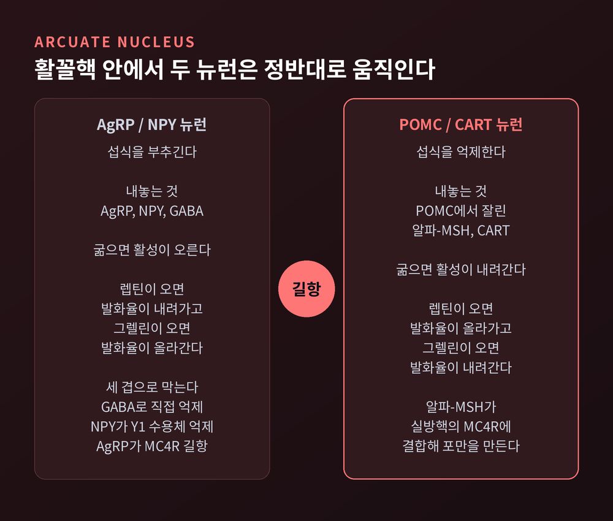
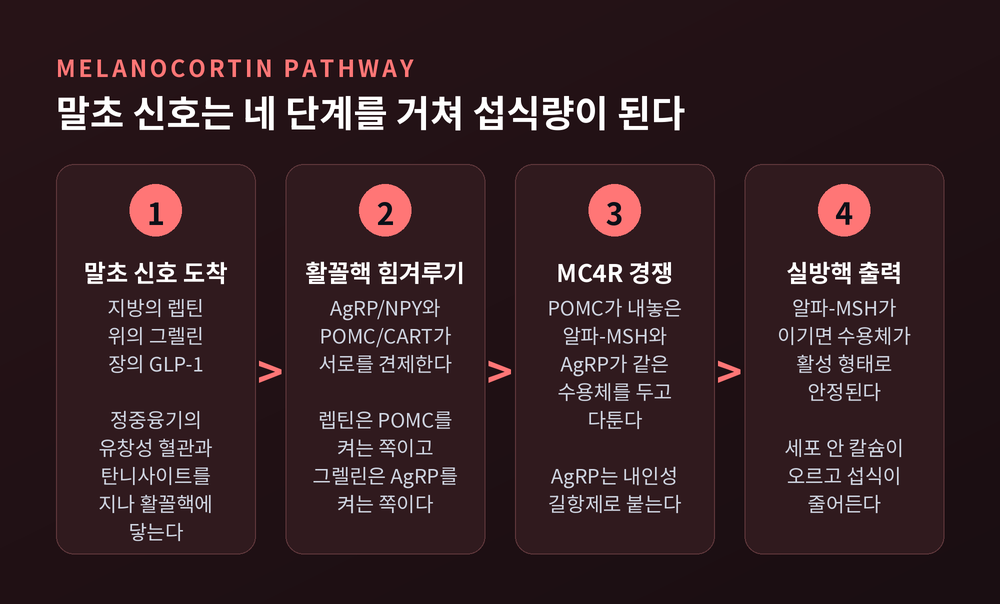
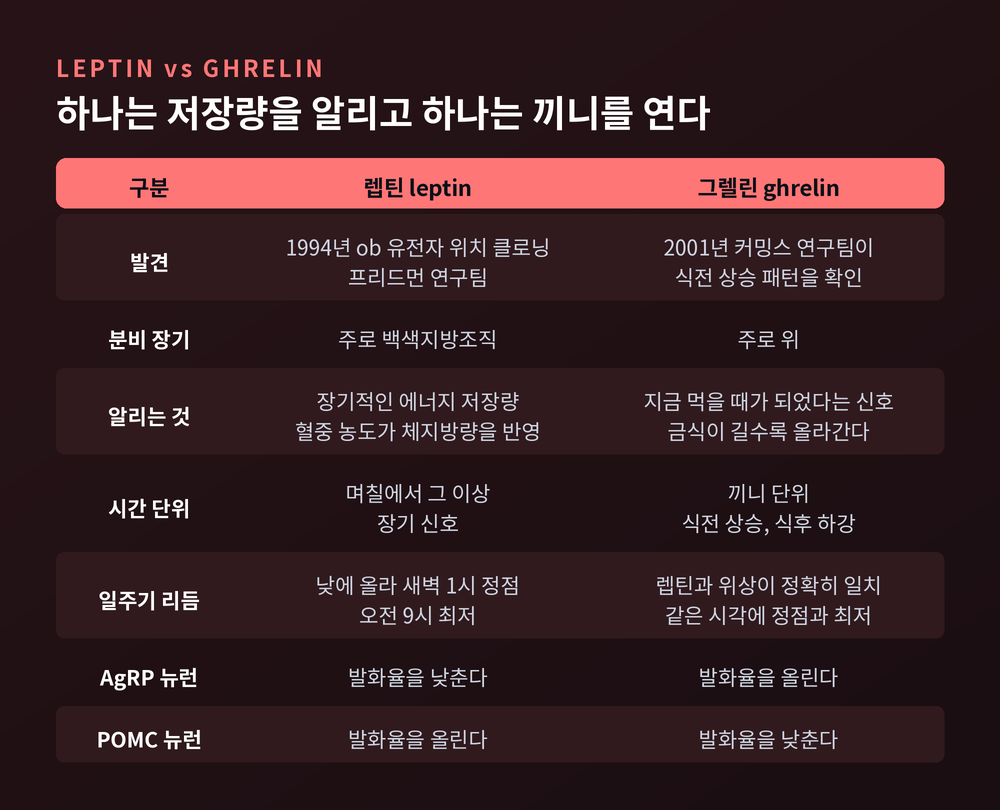
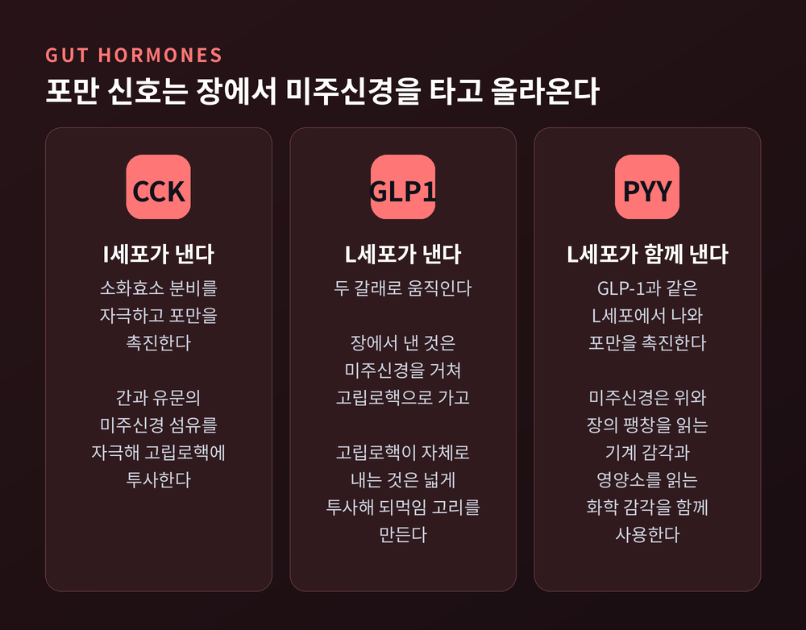
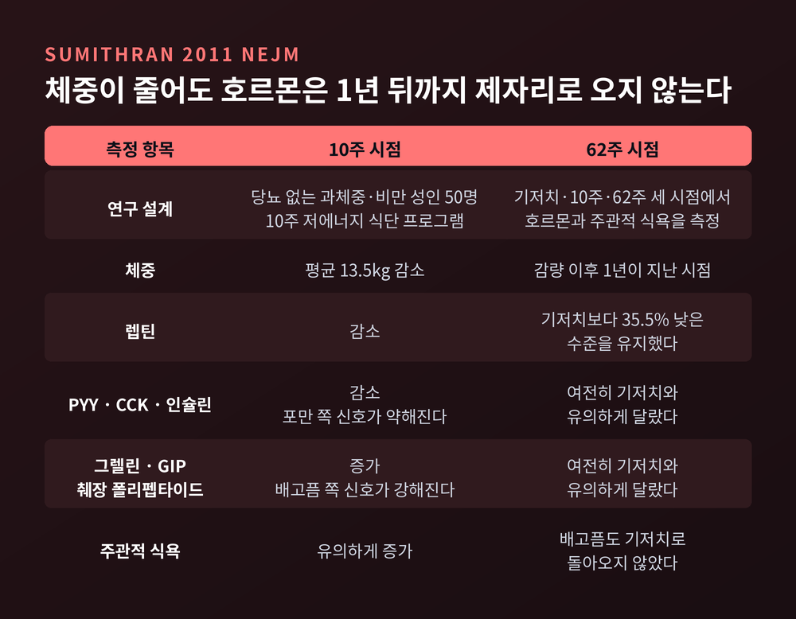
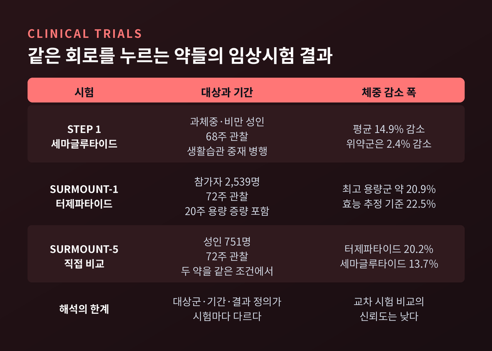

오늘은 배고픔이라는 감각이 몸 안에서 어떻게 만들어지는지 정리해 보겠습니다. 식욕은 흔히 의지의 문제로 이야기되지만, 그 밑에는 시상하부의 신경 회로와 여러 호르몬이 주고받는 정교한 신호가 깔려 있습니다. 렙틴과 그렐린, 그리고 그 신호를 받아내는 시상하부 활꼴핵을 차례로 따라가 보겠습니다.
배가 고프다는 느낌의 최종 판정은 뇌에서 내려집니다. 그 자리가 시상하부 아래쪽의 활꼴핵(ARC)입니다.
활꼴핵은 위치부터 특별합니다. 바로 옆에 정중융기라는 구조가 붙어 있고, 이 부위의 모세혈관은 창이 뚫린 유창성 내피로 되어 있습니다. 뇌 대부분을 감싸는 혈액뇌장벽이 여기서는 느슨하다는 뜻입니다.
탄니사이트라는 특수 세포도 한몫합니다. 이 세포는 혈액과 뇌척수액의 경계에 자리 잡고, 정중융기에 도착한 물질을 활꼴핵 쪽으로 능동적으로 실어 나릅니다. 호르몬 환경에 따라 스스로 모양을 바꾸는 가소성도 갖고 있습니다.
덕분에 활꼴핵은 혈액 속 호르몬과 영양소에 특권적으로 접근합니다. 지방과 위장이 보낸 편지가 뇌에 직접 배달되는 통로인 셈입니다.
활꼴핵에는 성격이 완전히 반대인 두 뉴런 집단이 나란히 있습니다.
하나는 AgRP/NPY 뉴런입니다. 섭식을 부추기고, AgRP·NPY·GABA를 내놓습니다. 다른 하나는 POMC/CART 뉴런입니다. 섭식을 억제하며, POMC가 잘려 나온 α-MSH를 분비합니다.
두 집단은 칼로리가 모자랄 때 정반대로 조절됩니다. 굶으면 AgRP 쪽이 켜지고 POMC 쪽이 꺼집니다.
AgRP 뉴런의 방해 방식은 세 겹입니다. GABA로 POMC 뉴런을 직접 억누르고, NPY가 POMC 뉴런의 Y1 수용체를 눌러 기능을 떨어뜨리며, AgRP 자체가 하류 수용체에서 α-MSH의 길항제로 붙습니다. 한 방향을 막는 데 세 개의 장치를 동원하는 구조입니다.

2011년의 두 실험이 이 회로의 위상을 바꿔 놓았습니다.
Aponte 연구팀은 광유전학으로, Krashes 연구팀은 화학유전학으로 AgRP 뉴런만 골라 자극했습니다. 결과는 즉각적인 폭식이었습니다.
주목할 점은 대상이 이미 칼로리가 충분히 채워진 생쥐였다는 사실입니다. 먹어야 할 생리적 이유가 없는 상태에서도, AgRP 뉴런의 활성만으로 섭식이 시작됐습니다. 사전 훈련도 필요하지 않았습니다.
같은 자극은 섭식을 늘리는 동시에 에너지 소비를 낮추고 지방 저장을 늘렸습니다. 자극을 끄자 모든 지표가 기준선으로 돌아갔습니다.
배고픔은 뱃속의 상태를 보고하는 감각이 아니라, 뇌가 만들어 내는 하나의 상태라는 뜻입니다.
POMC 뉴런이 내놓은 α-MSH는 시상하부 실방핵(PVN) 등에 있는 MC4R에 결합합니다.
α-MSH가 MC4R에 붙으면 수용체가 활성 형태로 안정되고, 세포 안 칼슘이 오르며, 섭식이 줄어듭니다. MC4R은 항상성 포만을 만들어 내는 결정적 스위치로 평가됩니다.
문제는 AgRP가 같은 자리를 노린다는 점입니다. AgRP는 MC4R에서 α-MSH를 밀어내는 내인성 길항제로 작동합니다.
정리하면 이런 흐름입니다. 말초 호르몬이 활꼴핵에 도착하고, AgRP와 POMC가 서로를 견제하며, 그 결과가 MC4R에서 한 번 더 겨뤄진 뒤, 실방핵을 거쳐 오늘 얼마나 먹을지가 정해집니다.

1994년 12월, 록펠러대 제프리 프리드먼 연구팀이 ob 유전자의 위치 클로닝에 성공했습니다. 유전자를 생쥐 6번 염색체에 매핑한 뒤 엑손 트래핑으로 분리해 냈고, 그 산물에 렙틴이라는 이름이 붙었습니다.
렙틴은 주로 백색지방조직에서 만들어집니다. 혈중 농도는 체지방량의 정도를 그대로 반영합니다. 재조합 렙틴은 ob/ob 생쥐뿐 아니라 정상 생쥐에서도 섭식과 체중을 낮추는 강력한 포만 신호로 작동했습니다.
여기서 렙틴의 성격이 드러납니다. 렙틴은 한 끼를 조절하는 호르몬이 아닙니다. 장기적인 에너지 저장량을 뇌에 보고하는 신호입니다.
활꼴핵에서 렙틴은 AgRP 뉴런의 발화율을 낮추고 POMC 뉴런의 발화율을 올립니다. 저장고가 넉넉하다는 소식이 도착하면, 뇌는 배고픔 쪽 회로의 볼륨을 내립니다.
렙틴이 계절을 알린다면, 그렐린은 시각을 알립니다.
그렐린은 주로 위에서 만들어집니다. 금식이 길어질수록 혈중 농도가 올라갑니다.
2001년 커밍스 연구팀은 사람에게서 식전 상승과 식후 하강이라는 뚜렷한 패턴을 확인했습니다. 식사 직전에 오르고 먹고 나면 떨어지는 이 리듬이, 그렐린이 식사 개시에 관여한다는 가설의 근거가 되었습니다.
같은 연구에서 흥미로운 사실도 나왔습니다. 끼니 사이 그렐린은 일주기 리듬을 보였고, 그 리듬은 렙틴과 정확히 위상이 맞았습니다. 두 호르몬 모두 낮 동안 올라 새벽 1시에 정점을 찍고, 밤새 내려가 오전 9시에 최저점에 닿았습니다.
작용 방향은 렙틴의 정반대입니다. 그렐린은 AgRP 뉴런의 발화율을 올리고 POMC 뉴런의 발화율을 낮춥니다.

식사 중 포만감은 위와 장에서 시작됩니다.
장 내분비세포는 여러 펩타이드 호르몬을 내놓습니다. I세포는 CCK를, L세포는 GLP-1과 PYY를 분비합니다.
이 신호들은 미주신경 구심성 뉴런을 타고 올라갑니다. 미주신경은 위와 장의 팽창을 감지하는 기계 감각과, 영양소·호르몬을 감지하는 화학 감각을 함께 씁니다.
축삭은 뇌줄기의 고립로핵(NTS)에 닿고, 여기서 시상하부 핵들로 신호가 중계됩니다. 소화관에서 미주신경은 뇌와 장을 잇는 주 통로 역할을 합니다.
GLP-1은 두 갈래로 움직입니다. 장에서 분비된 GLP-1은 미주신경을 거쳐 NTS로 가고, NTS가 자체적으로 내는 GLP-1은 넓게 투사해 섭식과 에너지 수요를 맞추는 되먹임 고리를 만듭니다.

여기서 이 분야의 오랜 수수께끼가 등장합니다.
비만인 사람 대부분에게서 고렙틴혈증이 관찰됩니다. 렙틴이 부족하기는커녕 넘칩니다. 그런데도 POMC 뉴런을 켜고 AgRP 뉴런을 끄는 작용은 제대로 일어나지 않습니다. 이 상태를 렙틴 저항성이라 부릅니다.
제시되는 기전은 대체로 세 갈래로 묶입니다. 혈액뇌장벽 수송의 문제, 신호전달 자체의 문제, 그리고 중추와 말초 양쪽에서 동시에 나타나는 둔감화입니다.
신호전달 쪽 근거는 비교적 단단합니다. SOCS3는 렙틴 신호의 음성 되먹임 조절자인데, 뇌에서 Socs3가 결핍된 생쥐는 렙틴에 의한 시상하부 STAT3 인산화와 POMC 유도가 강화되어 체중이 더 많이 줄었고, 고지방식으로 인한 체중 증가에도 저항성을 보였습니다.
다만 여기서 한계를 인정해야 합니다. 혈액뇌장벽 수송 손상은 오래 거론된 설명이지만, 반대 결과도 있습니다. 비만 생쥐를 형광 추적으로 살핀 연구와, 시상하부를 시간 분해로 관류해 측정한 연구에서는 렙틴의 장벽 통과가 온전했습니다. 아직 정리되지 않은 쟁점입니다.
지금까지 본 것은 항상성 회로입니다. 모자라면 채우고 채워지면 멈추게 하는 장치입니다.
그런데 사람은 배가 불러도 디저트를 먹습니다. 여기에는 쾌락적 섭식이라 불리는 다른 축이 작동합니다. 음식의 보상성과 기호성을 다루는 회로입니다.
중요한 대목은 두 과정의 관계입니다. 둘은 병렬로 돌아가지만, 쾌락적 과정이 항상성 과정을 압도할 수 있습니다.
관련 회로로는 중변연계·중피질 도파민 경로가 오래 주목받았습니다. 도파민계는 음식에 대한 동기와 정서적 추동, 그리고 음식의 쾌락적 속성과 섭취 맥락에 얽힌 학습을 매개합니다. 외측 시상하부가 항상성 정보와 보상 네트워크를 잇는 자리로 지목됩니다.
예전에는 두 시스템을 깔끔히 나눠 설명했습니다. 지금은 도파민 앙상블이 쾌락 신호와 항상성 신호를 함께 통합하는 대사 센서처럼 작동한다고 보는 견해가 힘을 얻고 있습니다.
2011년 NEJM에 실린 수미트란 연구팀의 자료는 이 회로가 얼마나 완강한지를 보여줍니다.
당뇨가 없는 과체중·비만 성인 50명을 대상으로 10주 저에너지 식단 프로그램을 진행하고, 기저치와 10주, 그리고 62주 시점에서 호르몬과 주관적 식욕을 측정했습니다.
10주 시점의 평균 체중 감소는 13.5kg이었습니다. 그때 렙틴·PYY·CCK·인슐린이 내려갔고, 그렐린·GIP·췌장 폴리펩타이드가 올라갔습니다. 포만 쪽이 약해지고 배고픔 쪽이 강해진 배치입니다. 주관적 식욕도 함께 올랐습니다.
핵심은 1년 뒤입니다. 62주 시점에도 이 호르몬들과 배고픔은 여전히 기저치와 유의하게 달랐습니다. 렙틴은 기저치보다 35.5% 낮은 수준에 머물러 있었습니다.
에너지 소비 쪽에서도 비슷한 조정이 일어납니다. 체중이 10% 줄면 총에너지소비는 약 15% 감소하는 것으로 보고됩니다. 조직이 줄어든 몫만으로 설명되지 않는 추가적인 절약이 얹히는데, 이를 적응 열발생이라 부릅니다. 다만 그 크기는 측정 방법에 따라 편차가 크다는 방법론적 논쟁이 남아 있습니다.

회로의 존재는 그것이 망가졌을 때 가장 선명하게 드러납니다.
첫 번째는 선천성 렙틴 결핍증입니다. 뚜렷한 과식과 생애 초기의 급격한 체중 증가, 중증 비만이 특징입니다. 오래릴리와 파루키가 처음 기술했고, 초기에는 근친혼 가계에서만 발견되는 것으로 여겨졌습니다.
이 경우 사람 렙틴의 재조합형인 메트렐렙틴을 투여하면 섭식 행동이 빠르게 정상화됩니다. 소아에서는 과식이 개선되고 정상량의 식사로 포만을 느끼게 되었으며, 지질이상과 인슐린 저항성, 면역 기능도 함께 나아졌습니다. 영국에서는 확대 동정적 사용 프로그램으로 15년 넘게 쓰여 왔습니다.
두 번째는 MC4R 변이입니다. MC4R 결핍은 현재까지 확인된 가장 흔한 단일유전자 비만입니다. 유병률은 집단에 따라 크게 다릅니다. 비만 성인에서는 0.5~1%, 소아기에 시작된 중증 비만에서는 5.8%까지 보고됐고, 일반 인구에서는 대략 2,000명당 1명 수준으로 추정됩니다.
두 사례는 같은 이야기를 다른 지점에서 합니다. 렙틴 결핍은 회로의 입력이 끊긴 경우이고, MC4R 변이는 마지막 스위치가 눌리지 않는 경우입니다.
최근 화제가 된 약들도 결국 이 회로 위에서 작동합니다.
세마글루타이드는 중추신경계의 GLP-1 수용체에 작용해 식욕 억제 신호를 켭니다. 활꼴핵의 GLP-1 수용체를 차단하면 식욕 억제 효과가 사라지는데, 활꼴핵이 작용의 핵심 자리라는 뜻입니다.
작동 방향은 앞서 본 그대로입니다. POMC 뉴런은 탈분극해 발화가 크게 늘고, 금식 상태의 AgRP 뉴런은 급성으로 억제됩니다. 분자 수준에서는 GLP1R 발현 뉴런의 Gs 결합 신호와 cAMP가 매개하는 것으로 보고됐고, 후뇌 뉴런의 기여도 함께 지목됩니다.
임상시험의 체중 감소 폭도 정리해 두겠습니다. STEP 1 시험에서 세마글루타이드군은 68주 시점에 평균 14.9% 감소했고 위약군은 2.4%였습니다. SURMOUNT-1 시험에서 터제파타이드 최고 용량군은 72주 시점에 약 20.9%(효능 추정 기준으로는 22.5%) 감소했습니다. 직접 비교한 SURMOUNT-5에서는 751명을 72주간 관찰해 20.2% 대 13.7%라는 결과가 나왔습니다.
다만 서로 다른 시험의 숫자를 나란히 놓는 일은 조심해야 합니다. 대상군과 기간, 결과 정의가 제각각이라 교차 비교의 신뢰도는 낮습니다.

정리하면 이렇습니다.
배고픔은 위장에서 올라오는 단순한 신호가 아닙니다. 지방이 보내는 장기 보고서(렙틴), 위가 보내는 식전 신호(그렐린), 장이 보내는 포만 신호(GLP-1·PYY·CCK)가 시상하부 활꼴핵에서 합산되고, AgRP와 POMC의 힘겨루기를 거쳐, MC4R이라는 마지막 스위치에서 결론이 납니다.
"식욕은 의지의 문제이기 이전에, 회로의 문제입니다."
이 회로를 아는 일이 곧 무엇을 해야 한다는 처방은 아닙니다. 이 글은 기전을 설명한 것이지 진료를 대신하지 않습니다. 체중이나 식욕과 관련해 실제로 고민이 있으시다면, 반드시 전문의와 상의하시길 권합니다.
다만 한 가지는 남습니다. 몸이 배고픔을 만드는 방식이 이렇게 여러 겹이라면, 그 감각을 겪는 사람을 조금 더 너그럽게 바라볼 이유도 그만큼 늘어나는 것 아닐까요.